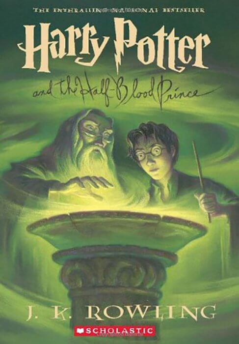

Best-Selling Books of All-Time
This page includes a list of the 20 best-selling books of all-time as well as the 25 best-selling book series of all-time. Best-selling books are ranked by number of copies sold, not my personal ratings.
-
 1.Don Quixote (500 million copies sold) by Miguel de Cervantes
1.Don Quixote (500 million copies sold) by Miguel de Cervantes  2. A Tale of Two Cities (200 million copies sold) by Charles Dickens
2. A Tale of Two Cities (200 million copies sold) by Charles Dickens 3. The Lord of the Rings (150 million copies sold) by J.R.R. Tolkien
3. The Lord of the Rings (150 million copies sold) by J.R.R. Tolkien 4. The Little Prince (142 million copies sold) by Antoine de Saint-Exupery
4. The Little Prince (142 million copies sold) by Antoine de Saint-Exupery 5. Harry Potter and the Sorcerer's Stone (107 million copies sold) by J.K. Rowling
5. Harry Potter and the Sorcerer's Stone (107 million copies sold) by J.K. Rowling 6. And Then There Were None (100 million copies sold) by Agatha Christie
6. And Then There Were None (100 million copies sold) by Agatha Christie7. The Dream of the Red Chamber (100 million copies sold) by Cao Xueqin
8. The Hobbit (100 million copies sold) by J.R.R. Tolkien
9. She: A History of Adventure (100 million copies sold) by H. Rider Haggard
 10. The Lion, the Witch and the Wardrobe (85 million copies sold) by C.S. Lewis
10. The Lion, the Witch and the Wardrobe (85 million copies sold) by C.S. Lewis11. The Da Vinci Code (80 million copies sold) by Dan Brown
 12. Think and Grow Rich (70 million copies sold) by Napoleon Hill
12. Think and Grow Rich (70 million copies sold) by Napoleon Hill13. Harry Potter and the Half-Blood Prince (65 million copies sold) by J.K. Rowling
14. The Catcher in the Rye (65 million copies sold) by J.D. Salinger
15. The Alchemist (65 million copies sold) by Paulo Coelho
 16. Harry Potter and the Chamber of Secrets (60 million copies sold) by J.K. Rowling
16. Harry Potter and the Chamber of Secrets (60 million copies sold) by J.K. Rowling 17. Harry Potter and the Prisoner of Azkaban (55 million copies sold) by J.K. Rowling
17. Harry Potter and the Prisoner of Azkaban (55 million copies sold) by J.K. Rowling 18. Harry Potter and the Goblet of Fire (55 million copies sold) by J.K. Rowling
18. Harry Potter and the Goblet of Fire (55 million copies sold) by J.K. Rowling19. Harry Potter and the Order of the Phoenix (55 million copies sold) by J.K. Rowling
 20. Harry Potter and the Deathly Hallows (50 million copies sold) by J.K. Rowling
20. Harry Potter and the Deathly Hallows (50 million copies sold) by J.K. Rowling